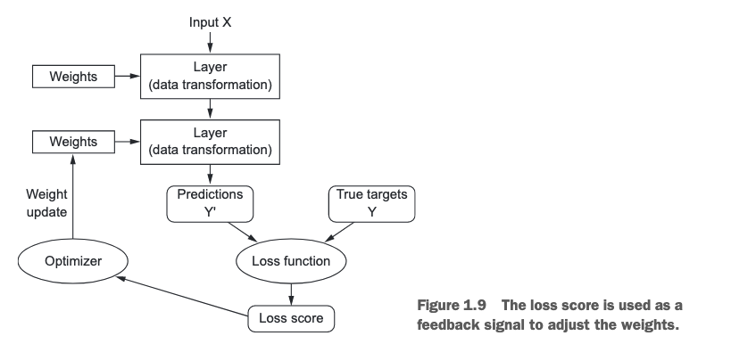
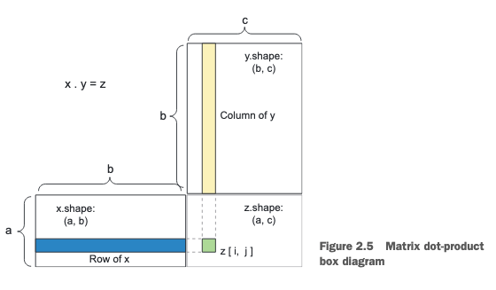
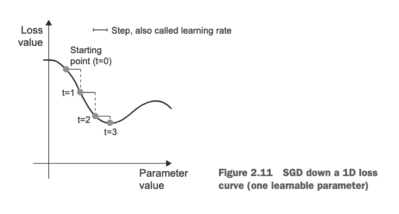
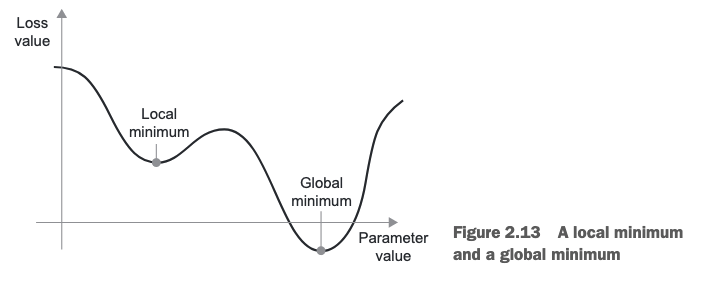
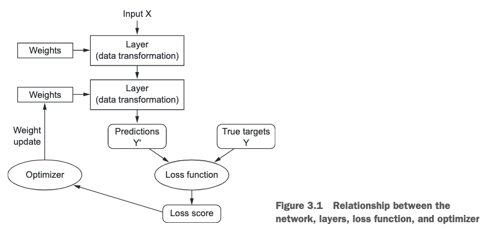

AI vs. ML vs. DL

- AI
- Classical Programming - The human inputs code which let's computers do tasks for us
- Machine Learning
- Humans clean up some data, feed it to the model, and the model creates it's own rules. Trained, not explicitly programmed.
- Deep Learning
ML Requirements
- Inputs - sound files
- Labels - transcripts
- Scoring metrics - used to adjust the model as it learns
Deep Learning
Here, we define our own representations of data in multiple layers. Layers are assigned weights, which are constantly optimized based on the loss function

ML or DL?
Don't start using deep learning for every problem. That's using a jackhammer to floss rabbit teeth.
For complex problems, here are the advantage of DL:
- Removes feature engineering
- Adjusts everything at once rather than one weak model at a time, as high-performing ML algorithms like XGBoost do.
Practical ML/DL
Learn XGBoost and Keras. Watch the Kaggle competitions to stay up-to-date. Win.
Neural Network Basics
What steps should we take to build a neural network with Keras?
Split
First, we have to decide our data into features and labels. A dimension check never hurts anyone, using the .shape attribute.
Don't forget to use a reshape(-1, 1) to get the proper column vector for the labels. For example, if we have a table of 4 features and 10 samples (10, 4), then the shape of our labels should be (10, 1).
Sculpt
This step involves:
- Instantiate the model - for example, run
models.Sequential(), and put that in anetworkvariable. - Add layers with
.add(layers)
Compile
To make our network ready for training, we need three things:
- Loss function
- Optimizer
- Scoring metrics
Pass these to network.compile() as **kwargs, and we're on our way!
Preprocess
Reshaping
The training images from the MNIST dataset are of shape (60000, 28, 28). How do we make this usable for Keras?
train_images = train_imags.reshape((60000, 28*28))
With multi-dimensional shapes, the reshape must have the same product as the original shape.
DataType Check
Just like with machine learning, we need numbers. A quick .astype('float32') can do wonders.
Standardization
If our interval is [0, 255], we just divide the data by 255 so it's in the range [0, 1].
If necessary, you can always use Sci-Kit's toolbox.
Categorical Types
Keras makes this easier for us than other libraries. Rather than one hot encoding, just use the to_categorical(data) function from the keras.utils module.
Train!
Use the .fit(training_data, training_labels) function on the network, and be exposed to the wonders of Deep Learning!
Tensor Manipulation
Ahh, tensors, arrays of matrices (or tensors . . .). How do we work with them?
Slicing
Slicing tensors is just like slicing numpy matrices. You can even use shorthand.
# This train_images[10:100] # Is equivalent to this train_images[10:100, :, :]
Batches
We know the samples axis and axis = 0 are equivalent. But, with neural networks, we're constantly subdividing data into simpler parts.
In batches, axis 0 is the batch axis.
Common dimensions
- 2D - Vectors
- Tables - Bank represents everyone as a name, income, and zip code. If we have 100,000 people, our shape would be (100000, 3)
- 3D - Timeseries or Sequences
- Stock data has samples, features, and time attributes
- 4D - Image Data
- Samples, height, width, color-depth
- 5D - Video
- Image data with the extra frames dimension
Operations
Elementwise
Let's look at the sculpting process to understand elementwise operations.
keras.layers.Dense(512, activation = 'relu')
Here, 512 represents the neuron units in our network. activation is the function which takes an input 2D tensor and outputs another 2D tensor.
output = relu(dot(W, input) + b)
There are a few things going on here.
dot- dot product- - The kernel
- - The bias
The kernel, , and the bias, , are known as the weights, or trainable parameters of the layer

Broadcasting
Here's a helpful video, and my summary.
First, we ask: Are the dimensions compatabile?
Conditions:
- Dimensions are equal - (1, 3) and (1, 3)
- One of the dimensions is 1 - (1, 5, 3) and (5, 5, 3)
The resultant shape of a broadcasting operation takes the maximum of the compared dimensions.
Consider (1, 3) and (3, 1). The resultant shape would be (3, 3)
Mental Model
The easiest way to picture broadcasting ops is imagining the smaller rank tensor being copied out. Then, the operation is performed.
Dot Product
The dot operation differs from *.

My steps:
- Transpose the first matrix
- Multiply column by column
- Add up that sum
That's worded a bit different than other explanations, but I like the transposition idea.
Here's a simple explanation. If you think about matrix multiplication (the dot product) in terms of economics, costs and demand, it's facile to grasp the logic.
Requirements
Columns of the first matrix must equal the rows of th second.
The final output is flipped, so to speak. The matrix will have the same amount of rows as the first matrix, and the same amount of columns as the second

Gradient Optimization
The key to minimizing the loss function is calculating it's gradient.
Here's a simple gradient.

Now, one with more features.

Either way, we're interested in the absolute minimum, where the slope = 0.
Batch SGD
An analytical approach is equivalent to actually calculating the derivative of the function. That's possible, but extremely taxing on the computer when the number of parameters, , goes up.
Instead, we use SGD on each batch. We iterativly tweak the parameters until we hit that sweet spot.

Momentum
We have a local/global minimum issue with this approach.

To remedy this, we calculate velocities at each step and use the slope, so it won't stop at each little bump.
Neural Anatomy
Components
Let's dive deeper into the components of neural networks we've covered so far:
- Layers
- Input Data
- Loss Function
- Optimizer

Additionally, let's cover:
- Hidden units
Layers
Layer types are defined by the shape of the tensors they can take:
- Dense - 2D Vectors
- Recurrent,
LSTM- 3D - 2D Convolution,
Conv2D- 4D
The input to one layer is the output of one before it. This means you only have to specify the input shape of the first layer.
from keras import models from keras import layers model = models.Sequential() model.add(layers.Dense(32, input_shape=(784,))) model.add(layers.Dense(32))
Dense
Linear stacks of layers, the simplest setup we can create. Luckily, it's also the most common. The questions we must ask ourselves are as follows:
- How many layers?
- How many hidden units?
Loss Function
Be very specific in how you define these. I love the author's example here:
Imagine a stupid, omnipotent AI trained via SGD, with this poorly chosen objective function: "maximize the average well-being of all living humans." To make its job easier, this AI might choose to kill all humans except a few and focus on the well-being of the remaining ones.
Choosing a loss function is generally not too difficult. Here are some common cases:
- Binary crossentropy - two-class classification
- Categorical crossentropy - multi-class classifation
- MSE - regression
- Connectionist temporal classifcation (CTC) - sequence learning problems
Optimizers
First, we need to understand the exploding/vanishing problem in deep learning.
Exploding/Vanishing
Detect an explosion problem if you see these signs:
- Immensely large changes in loss on each step
- The model's loss will be NaN during training
- Weights grow exponentially, trending towards and becoming NaN
In contrast, vanishing might cause:
- Immensely small changes in loss on each step
- Weights close to the output layer will change more than those close to the input layer
- Models shrink exponentially, trending towards 0
rmsprop
This is a very common optimizer that balances exploding and vanishing
Hidden Units
Hidden units are the dimensions of the projections the layers map the input data onto. Think of each hidden unit as more freedom you're giving the model.
More hidden units means more variance - overfitting, and less bias. You need to strike a nice balance here!
Note that the hidden units represent the columns of the weight matrix,
's shape is therefore (input_dimensions, hidden_units)
Activations
Without an activation function like relu (also called a non-linearity), the Dense layer would consist of two linear operations—a dot product and an addition. So the layer could only learn linear transformations (affine transformations) of the input data: the hypothesis space of the layer would be the set of all possible lineartransformations of the input data into a 16-dimensional space. Such a hypothesisspace is too restricted
relu
relu stands for Rectified Linear Unit, and it is a function meant to zero out negative values.
sigmoid
This allows us to use probability distributions by squashing are values down into the interval [0, 1].